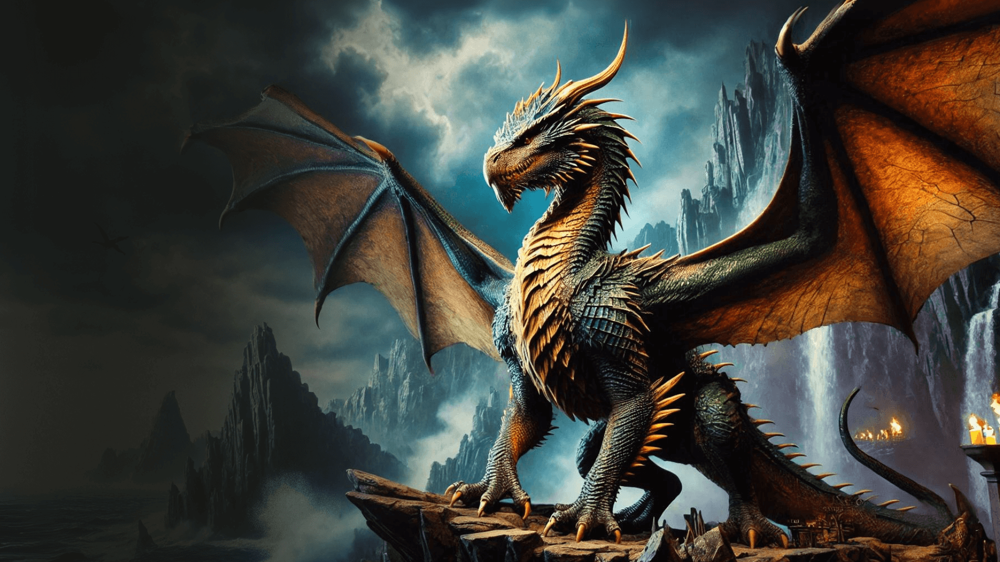
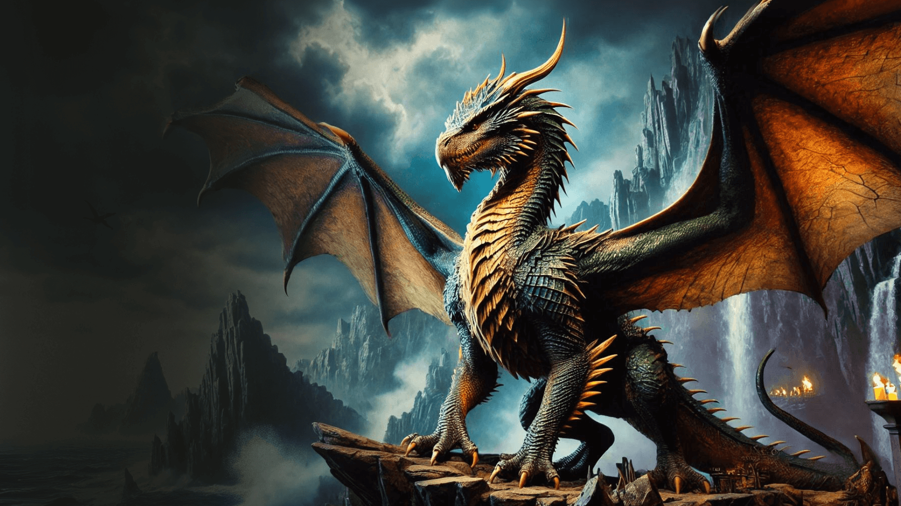

Balerion
Balerion, chamado de Terror Negro, foi um dragão da casa Targaryen. Ele foi montado pelo rei Aegon I Targaryen durante a Guerra da Conquista.
Syrax
Syrax foi uma Dragão-fêmea. Ela foi montada exclusivamente por Rhaenyra Targaryen. Seu nome veio de uma deusa Valíria.
Arrax
Arrax foi um dragão montado pelo Príncipe Lucerys Velaryon durante a Dança dos Dragões.
Caraxes
Caraxes, também chamado de Wyrm de Sangue e verme sangrento, foi o dragâo montado pelo Príncipe Aemon Targaryen durante o reinado do Rei Jaehaerys I targaryen e, mais tarde, pelo Príncipe Daemon Targaryen.
Seasmoke
Seasmoke era um dragão cinza-claro. Era grande o bastante para combate durante a dança, mas ainda um jovem dragão, e mais ágil no ar do que seus irmãos mais velhos.
Vermax
Vermax foi o dragão montade pelo Príncipe Jacaerys Velaryon. Ele prosperava e crescia a cada ano. o Dragão ficou mal-humorado quando próximo de neve, gelo e frio. A cor de Vermax não é descrita nos livros.
Vhagar
Vhagar foi uma dragão-fêmea montada por Visenya durante a Conquista, ao lado do Balerion de Aegon o Conquistador e o Meraxes da sua irmã Rhaenys.